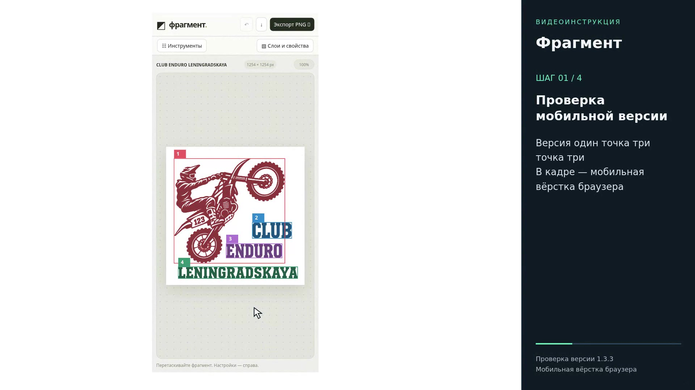

Вернуться в редакторВерсия 1.3.3: исправление разделения на телефоне
Исправлено чтение встроенного изображения в Android. Технические исключения заменены короткими понятными сообщениями.
- На мотоцикле при чувствительности 35 появляются четыре крупных объекта, без ошибки доступа к картинке.
- Нажмите «Автоматически разделить объекты», выберите слово CLUB и передвиньте его. Остальные части остаются на месте.
- Сохраните изображение кнопкой «Экспорт PNG».
- При загрузке повреждённого файла сообщение короткое, панель не растягивается, рабочий рисунок сохраняется.

46 секунд · Silero Ксения · проверка в браузере